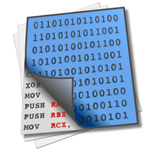

开发环境

Visual Studio
应用程序的集成开发环境
Microsoft Visual Studio（简称VS）是美国微软公司的开发工具包系列产品。VS是一个基本完整的开发工具集，它包括了整个软件生命周期中所需要的大部分工具，如UML工具、代码管控工具、集成开发环境(IDE)等等。所写的目标代码适用于微软支持的所有平台。
官方网站：@Microsoft Inc. （付费）
MSDN下载：@MSDN
适用平台：Windows/macOS

Xcode
应用程序的集成开发环境
UltraEdit
老牌文本编辑器
Ultraedit是一款在Windows系统中非常出名的文本编辑器，可以编辑文本、十六进制、ASCII 码，完全可以取代其他文本工具，同时还支持许多开发语言，如 C, Objective C, Javascript, XML, PHP, Perl, Python等，并可同时编辑多个文件，而且即使开启很大的文件速度也不会慢。软件附有 HTML 标签颜色显示、搜寻替换以及无限制的还原功能，一般用其来修改EXE 或 DLL 文件。
官方网站：@ultraedit （付费）
适用平台：Windows/macOS
DOWNLOAD代码管理
Cornerstone
mac上最好用的SVN客户端
Cornerstone for Mac乃是Mac上最佳的SVN管理工具，客户端应用程序是专门为Mac用户设计的Subversion的控制，无论您是那个版本，或者一个Subversion的测试版，Cornerstone将有助于简化工作流程，使版本控制更加透明。
官方网站：@zennaware （付费）
适用平台：macOS
DOWNLOADSourceTree
github管理神器
SourceTree 是 Windows 和Mac OS X 下免费的 Git 和 Hg 客户端管理工具，同时也是Mercurial和Subversion版本控制系统工具。支持创建、克隆、提交、push、pull 和合并等操作。SourceTree拥有一个精美简洁的界面，大大简化了开发者与代码库之间的Git操作方式，这对于那些不熟悉Git命令的开发者来说非常实用。
官方网站：@sourcetree （免费）
适用平台：macOS
DOWNLOADTower
mac平台最强大的Git客户端
Tower 是一款非常强大的Git客户端，如果你使用git的过程中，感觉使用命令很困难，可以尝试使用Tower。它采用了分布式版本库的方式，不必服务器端软件支持，使源代码的发布和交流极其方便。
官方网站：@git-tower （付费）
适用平台：macOS
DOWNLOADSnippetsLab
构建你的私人代码片段库
Snippetslab 不是一款传统意义上的代码编辑器，它的设计从头到尾都透着一股浓浓的为碎片化而生的味道。它所面向的不是连续的编辑一个完整程序的情景，而是将一个程序组件一个个拆分出来编写的情景。
官方网站：@snippetslab （付费）
适用平台：macOS
DOWNLOADweb前端/Html5
Adobe Dreamweaver
所见即所得网页编辑器
Dreamweaver是一款所见即所得网页编辑器，是美国MACROMEDIA公司开发的集网页制作和管理网站于一身的所见即所得网页编辑器，它是第一套针对专业网页设计师特别发展的视觉化网页开发工具，利用它可以轻而易举地制作出跨越平台限制和跨越浏览器限制的充满动感的网页。
官方网站：@Adobe Inc. （付费）
适用平台：Windows/macOS
DOWNLOAD
Coda
强大的Web编辑器
Coda是一个功能强大的Web编辑器，能将一切导入一处并进行编辑。Coda for mac 2不论终端、CSS和文件储置，都超越了我们的预期。随着大量新的、更特色的要求，我们强化刷新UI，此更新将让你收获意外之喜，真正做到专业。
官方网站：@Panic Inc. （付费）
适用平台：macOS
DOWNLOAD其他辅助工具

Dash
API文档浏览器
